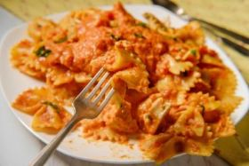

Exotic Dishes

Learning to Love Cooking
The way we eat and cook, and the things we eat and try have changed a lot in the last few years. More than ever we in the states have begun to branch out and try new things, stretching our comfort zones. Many of the dishes and ingredients available to us today were not available few years ago.
Not only do we see curries and gyros in restaurants, but the ingredients and recipes are creeping into our own local supermarkets. Where in past years you may have only gone to Panda Express to get eggrolls and chow mein; now you can go to a friends' homes, and have thosesame dishes. Sometimes they even taste better and have more of an authentic feel to them!
What's Popular?
Foods that were hardly known in this country a few years ago are starting to gain a popularity. More than ever before there is so much to try and experience; but, alas all of us are not Iron Chefs in the kitchen. If you’re here you might be new to cooking, experienced, or looking for new and exciting things to try. I personally believe that one of the greatest reasons we shy away from cooking and trying new things is fear.
At times it can feel like a lot of work for something that might end with us setting the kitchen ablaze. The goal of this sight will be to help you to enjoy cooking; and nothing helps a person love cooking more than making something delicious that they can be proud of. It makes cooking so much more fun.
The Key to Loving Cooking
The key to loving cooking is loving the food and taking all the stress out of the experience. To horribly misquote Yoda, stress leads to anger, anger leads to hate, and hate leads to burned dinner. Cooking can be a place where you go to get away from the stress of the day to relax and decompress. My hope is to give you a new appreciation and perspective on cooking.
If you’ve never branched out from the typical casseroles, spaghetti, salads with fruit in them, and my personal least favorite Hawaiian haystacks then be prepared for new and exciting foods! Cooking authentic foods from other places may be different than what you’re used to, but it will be well worth your time. You’ll learn to cook authentic dishes like, curry from Guyana and Vermicelli noodle bowls from Vietnam. You'll learn how to cook from scratch step by step, with tips and tricks to make it fun.
Exotic Cooking's Mission
The mission is to teach you new and exciting dishes you will love and to show you how to enjoy the experience. In the future you can look forward to some of the dishes below, along with many more. We hope to reach people with a variety of different skills and cooking backgrounds. Look forward to cooking dinner with Exotic Cooking!
French Guyanese Pasta
Laos Pho
Vietemes Spring Rolls

Guyanese Curry